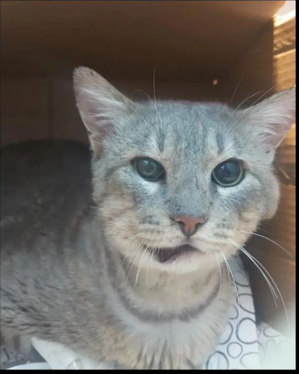
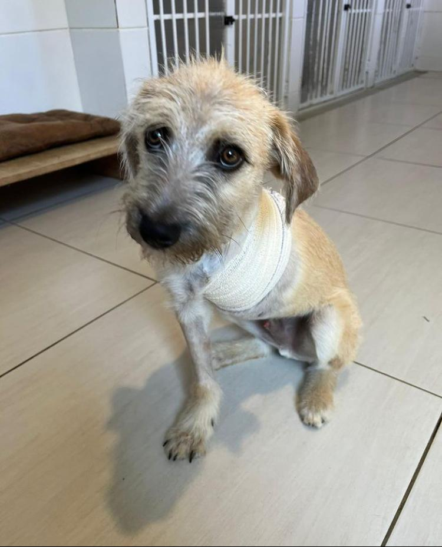
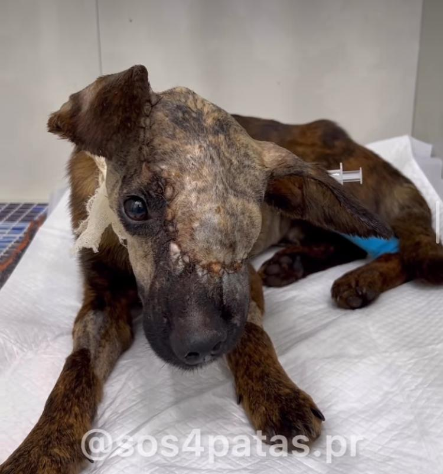
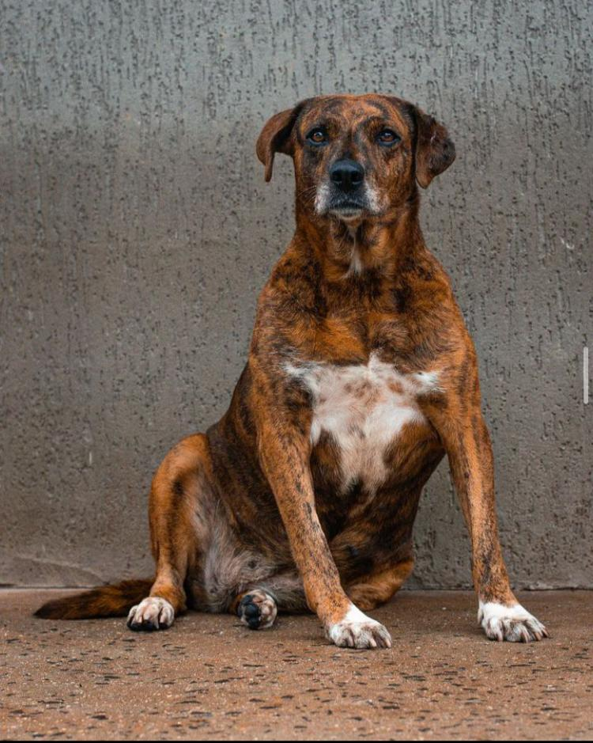
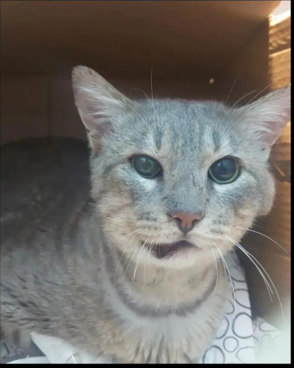
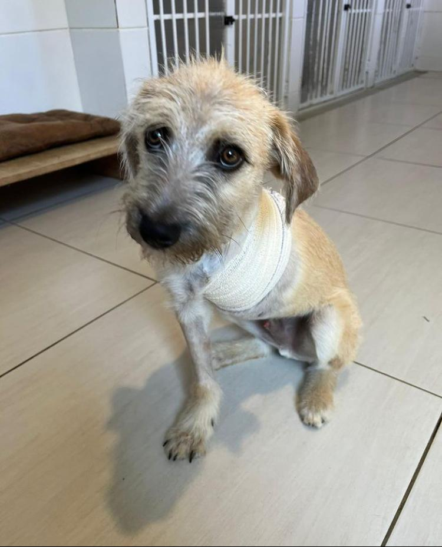
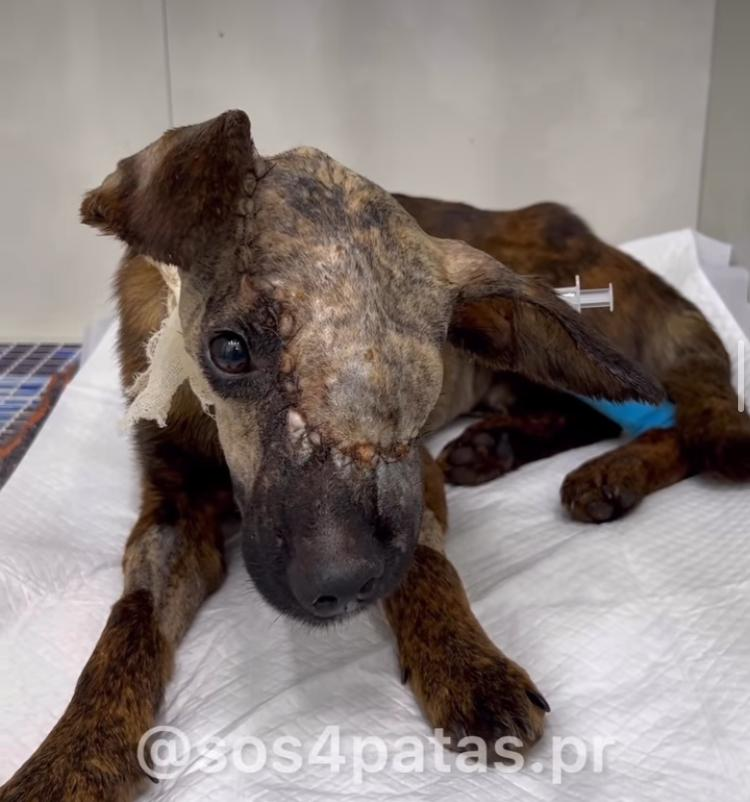
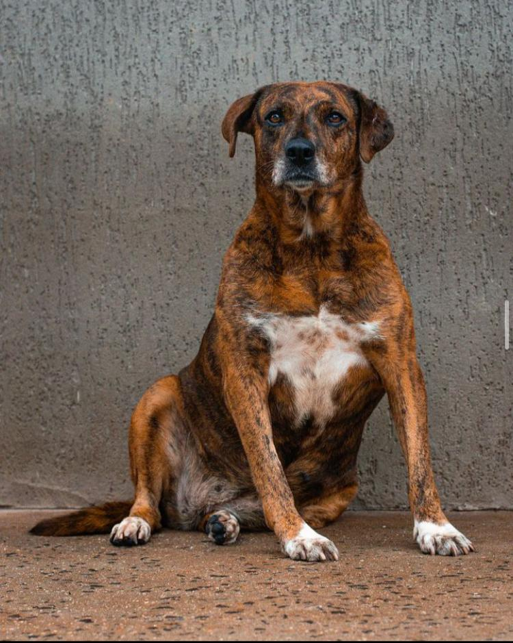

UMA COMUNIDADE ONDE NÓS AJUDAMOS A MELHORAR A SITUAÇÃO DOS ANIMAIS DE RUA
Nossa missão é: "Levar informações a comunidade sobre pequenos e grandes atos que podem ajudar esses animais".
De acordo com uma pesquisa da UFPR temos cerca de 450 mil animais em Curitiba, sendo que 13,5 mil desses animais estão abandonados, o que infelizmente alguns estão em situações precarias.
Muitos de nós queremos comprar por acharmos bonito ou queremos muito aquela raça, mas todos os animais merecem ter um lar, serem amados e cuidados, então não compre adote!!
 







Alguns desses animais de rua sofrem maus tratos, ou até mesmo aqueles que ja tem uma casa. Uma maneira de ajudar, é denunciando pelo número 0800 61 8080.
Outra maneira de ajudar é fazendo doações ao lares que os abrigam, se desfazer de roupas velhar que podem servir de roupinhas, participar de ações voluntárias, oferecer lar temporário, ou improvisar casinhas para os animais de rua.